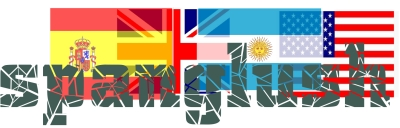

IB Docs (2) Team
IB Docs (2) Team

Spanish
Analía Dobboletta works at Asociación Rosarina de Cultura Inglesa, Rosario, Argentina, and is a highly experienced English B examiner.
L1 Hurdles: the Case of Spanish Influence
One of the aspects of L2 learning that may pose a serious challenge at one stage or another of language development is L1 hurdles. What are they? How to jump those hurdles? How can learners communicate in the L2 leaving no trace of their L1? Many times they express themselves as if they spoke in English though their scripts may not read as if they actually spoke English. It seems that the English language is made to fall into a sort of Spanish pattern.
As an external marker myself, what I read is the final product of candidates whose L1 is undoubtedly Spanish. Though scripts are blind, some of them are unmistakably streaked with Spanish influence. Here are the TopTen of common errors:-
# 1. People is worried about the consequences.
#2. I only read three pages so I cannot say much for the time being.
#3. You have to come with us one of these days.
#4. You may have fun anywhere but is always better to visit unpolluted areas.
#5. Nowadays internet is a current topic of discussion.
#6. In that moment I was lying on the floor.
#7. It’s not fair to be rewarded for a work you didn’t do.
#8. He won good money in his new job.
#9. Five absentees today, wich is quite odd.
#10. He thought that if he said that for his parents it would be disappointing.
The top ten
Having said that, I will comment on what I have ascertained are the most common, and recurrent, instances of Spanish-influenced English:
#1. S-V Agreement
Spanish-influenced English | Spanish | English |
(a) * People is (also The people is) worried about the consequences | La gente está preocupada por las consecuencias. | People are worried about the consequences. |
(b) * The police / Police has a duty to fulfil. | La policía tiene una obligación que cumplir. | The police / Police have a duty to fulfil. |
(a) Of these inaccurate instances of S-V agreement, ‘*people is’ is the one that ranks highest in terms of frequency of use and the one that, many teachers will agree, also tends to be the most exasperating. We are before a combination that, of course, does not obscure meaning but one that is learnt (though not acquired) quite early on in the learning process. Still, it is one of the last forms to be acquired correctly. (b) From the students’ perspective, ‘The police’ and ‘Police’ follow more or less the same logic as people, i.e. a plural subject that in Spanish is followed by a singular verb.
#2. Verb tenses
Spanish-influenced English | Spanish | English |
(a) *I only read three pages so I cannot say much for the time being. | Leí solamente tres páginas por eso no puedo decir mucho por el momento. | I’ve only read three pages so I cannot say much for the time being. |
(b) *I’ll do it whether he likes it or not. | Lo haré, le guste o no le guste. | I’m going to do it whether he likes it or not. |
(a)Though present perfect is a feature of Spanish, it is not actually used in all its varieties. In Argentina, for example, language users generally opt for past simple instead of present perfect so this rule of use in the L1 is transferred to English. Therefore, present perfect is one of the last tenses to be deployed naturally. (b) As well as this, will and going to also have a place in the Spanish grammar but they are used interchangeably. This may account for the random use of will and going to on the part of Spanish speakers.
#3. Modals
Spanish-influenced English | Spanish | English |
(a) You have to come with us one of these days / tell the teacher what happened. | Tenés que (Te gustaría) venir con nosotros uno de estos días(?) /(deberías) decirle a la profesora lo acontecido. | Would you like to come with us one of these days? / You should tell the teacher what happened. |
(b) The final exams mustn’t be that difficult this term. | Los finales no deben ser tan difíciles este semestre. | The final exams can’t be that difficult this term. |
(a) Have to is a typically misused modal among Spanish speakers probably because tenés que is commonly used among the young to make invitations or to give advice in their L1. (b) Whether in connection with obligation or negative assumption, Spanish uses the forms debe-no debe. Therefore, it may be hard for the students to grasp that for negative assumptions in English, they should use a form which they normally associate with no puedo (can’t), i.e. lack of ability. With all its shades of grey, modality leaves many learners in the dark about the attitude conveyed, especially those learners with a much more black-or-white Spanish perspective.
#4. Omission of subject and double subject
Spanish-influenced English | Spanish | English |
(a) *You may have fun anywhere but is always better to visit unpolluted areas. | Podés divertirte en cualquier lugar pero siempre es mejor si vas a lugares que no estén contaminados | You may have fun anywhere but it’s always better to visit unpolluted areas. |
(b) *I oppose situations that involve violence and that they lead to criminal acts. | Me opongo a situaciones que tengan que ver con la violencia y que conduzcan a actos criminales. | I oppose situations that involve violence and that lead to criminal acts. |
(a) Whether in speech or in writing, these are mistakes that very few Spanish speakers will be unfamiliar with. There is a natural tendency for Spanish speakers to use the null subject in English probably because that is a feature of their L1. (b) Missing subjects are as undesirable as double subjects. What happens is that after long years of having teachers drill subjects in, Spanish-speaking students learn the rule and there comes a time when they make sure that every clause has its subject! From then on, there starts the no-double-subject campaign.
#5. Articles
Spanish-influenced English | Spanish | English |
(a) *Nowadays internet is a current topic of discussion. | Hoy en día internet es un tema frecuente de discusión. | Nowadays the Internet is a current topic of discussion. |
*We have library in our school. | Tenemos biblioteca en la escuela. | We have a library at school. |
As may be seen from these examples, the absence of articles in learner language has a one-to-one correspondence with their Spanish counterparts. (a) The word internet is not normally preceded by an article in Spanish, at least in Argentina e.g. Hice una suscripción por internet = I made a subscription through the Internet. When the word in Spanish and in English is exactly the same, it is quite evident that the students use the word in English following the dictates of their L1. (b) The mistake has its origin in the fact that ‘biblioteca’ in the example in Spanish is used in the sense of ‘facility’ and takes no article (e.g. la casa tiene cocina, comedor, biblioteca, terraza, etc).
#6. Prepositions
Spanish-influenced English | Spanish | English |
(a) *In that moment I was lying on the floor. | En ese momento estaba tendido en el piso. | At that moment, I was lying on the floor. |
(b) *We arrived to Barcelona. | Llegamos a Barcelona. | We arrived in Barcelona. |
(a) En in Spanish is equivalent to in in English (e.g. en Italia=in Italy), at (e.g. en casa=at home), on (e.g. en el piso=on the floor), but ‘in’ as the counterpart of ‘en’ is the preferred form for Spanish speakers probably because of its phonological semblance with ‘en’. (b) By analogy, ‘to Barcelona’ is the Spanish-influenced English for ‘a Barcelona’. These are common mistakes though they may not stand out so overtly in the classroom, probably because they do not make meaning obscure to speakers that share Spanish as an L1, and this may be dangerous.
#7. Confused words
Spanish-influenced English | Spanish | English |
(a) *We had a busy week because of the amount of tests. | Tuvimos una semana dura por la cantidad de pruebas. | We had a busy week because of the number of tests. |
(b) *It’s not fair to be rewarded for a work you didn’t do. | No es justo que te premien por un trabajo que no hiciste. | It’s not fair to be rewarded for a job / an assignment that you didn’t do. |
(a) As the word ‘cantidad’ is used in Spanish both with countable (cantidad de personas= number of people) and uncountable nouns (cantidad de basura= amount of rubbish), Spanish speakers tend to use ‘amount’ for both countable and uncountable nouns in English as well. The word ‘número’ in Spanish refers to the exact figure as in ‘El número de víctimas fatales asciende a tres = The number of casualties is three ‘. (b) In Spanish, there is only one word, ‘trabajo’, for work, job and assignment. It may be regarded as cost-effective to learn one word that can be used both as a verb and as a noun as is the case of ‘work’. Because of this, some students may prefer to use ‘work’ as a noun (instead of ‘job’ or ‘assignment’) even at the expense of making it countable.
#8. Collocation
Spanish-influenced English | Spanish | English |
(a) *He won good money in his new job. | Ganó buen dinero en su nuevo trabajo. | He earned good money in his new job. |
(b) *She made me a favour. | Me hizo un favor. | She did me a favour. |
(a) There is in each of the examples above a good measure of direct translation, and why not in the case of win, earn and gain (‘ganar’ in Spanish) a touch of insensitivity to shades of meaning? (b) Or in the case of make and do (‘hacer’ in Spanish) a touch of insensitivity to idiomaticity?
#9. Misspelt words
Spanish-influenced English | Spanish | English |
(a) *Five absentees today, wich is quite odd. | Cinco ausentes hoy, lo cual es muy raro. | Five absentees today, which is quite odd. |
(b) *It is his responsability to report the case. | Es su responsabilidad reportar el caso. | It is his responsibility to report the case. |
(a)In ‘*wich’ there is evidently simplification by dropping letter h which in Spanish does not mark any phonological difference because it is silent. Learners might unconsciously think that it does not make any difference to have or not to have h written. (b) What accounts for ‘*responsability’ is similarity to L1 spelling.
#10. Word order
Spanish-influenced English | Spanish | English |
(a) *He thought that if he said that for his parents it would be disappointing. | Pensó que si él decía eso, para sus padres sería una decepción. | He thought that if he said that it would be disappointing for his parents. |
(b) *The first question we asked him was what did he think about our country. | La primera pregunta que le hicimos fue qué pensaba de nuestro país. | The first question we asked him was what he thought about our country. |
(a) Misplaced modifiers as in ‘for his parents’ are a common source of confusion for readers who sense there is some strange phrasing as a result. (b) The word order for questions invariably finds its way in reported questions.
What remains after description of mistakes is help the learners jump the hurdles.
Teaching L1 interference away
So far so good. Now, how to jump these hurdles? I believe that the first step is to acknowledge that L1 influence is present in students’ production. It happens all too often that as teachers we run the risk of getting used to our students’ mistakes. In this sense, sharing the same L1 with our students is a drawback. Would a native speaker of the language understand the messages my students’ are creating? Interpreting our students’ production then becomes an exercise of simultaneous comparison between what they say and what a native speaker would say.
The next step is to describe those influences, reflect on why they are there, explain what effect they have on the reader. This is essential to raise our students’ awareness of how they use the language and of how native speakers use the language. The approach should be purely descriptive, not prescriptive. This and rich exposure to the L2 can make the difference between hitting obstacles in the dark or jumping hurdles in broad daylight!
Top Tips
#1. Monitor learner production and give feedback: errors deserve to be pointed out and commented on
#2. Engage in teacher-learner dialogue: share the reasoning behind certain errors with the learners
#3. Focus on form: create situations and have the learners complete blanks by choosing from options (false friends, collocations, confused words)
#4. Draw mind-maps with collocates (e.g. win, gain, earn)
#5. Create a parallel text: have the learners compare part of their texts to alternative ones where you rephrase / improve their L1 influence with more idiomatic language and have them sense the differences
#6. Conduct peer correction sessions: underline L1 influence in students’ texts and have them work in pairs to improve their versions
#7. Write up on the board examples of L1 influence drawn from students’ texts and have the groups work collaboratively to improve those versions
#8. Devise word order activities (on paper or with digital software)
#9. Set twin class blogging projects for meaningful communication between Language A and Language B speakers, each group communicating in their L2 and having L1 readers. L1 readers may point to oddities and suggest improvements.
#10. Devise ‘find the differences’ texts: have the learners find seven differences between the texts they write and the one you provide
